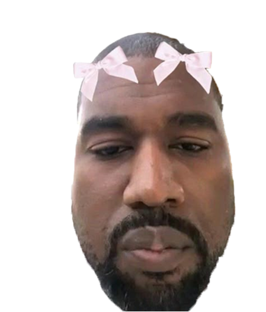
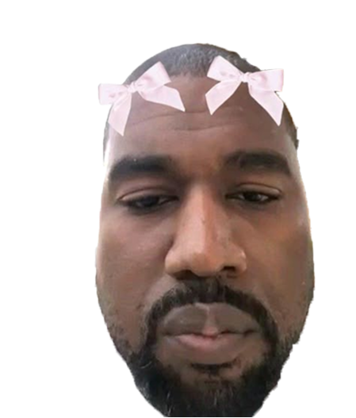

TRACK
STATION
what is rap?


The 1990s are widely considered the golden age of rap. It was a time when lyrical skill, storytelling, and social commentary reached new heights. Artists like Tupac, The Notorious B.I.G., Nas, Wu-Tang Clan, and Lauryn Hill brought powerful messages about racism, poverty, violence, and identity. East Coast vs. West Coast rivalries shaped the scene, while regions like the South and Midwest started to emerge. Production became more refined, but the raw, authentic tone remained central. The 90s also saw rap gain respect as a true cultural and artistic force, influencing fashion, film, and politics.


In September 1996, Tupac was shot just before the release of his fourth album, All Eyez on Me, which featured two tracks that took over every speaker in the world: "How Do You Want It" and "California Love".
In the 2000s, rap became a cultural powerhouse, blending mainstream appeal with street authenticity. Artists like Eminem, 50 Cent, Jay-Z, and Missy Elliott dominated the charts, while the South rose with the popularity of crunk, trap, and labels like Cash Money and No Limit. Mixtapes and DVDs helped underground artists build huge fanbases outside of traditional media. The themes often revolved around success, fame, struggle, and resilience, with flashy beats and catchy hooks. Rap videos became more cinematic, and collaborations with pop and R&B artists brought hip-hop to new global audiences.


In the 2010s, rap became fully mainstream. Artists mixed rap with pop, R&B, and electronic sounds. Themes focused on fame, wealth, identity, and self-empowerment. It was also the rise of streaming platforms, which changed how music was shared and discovered. Rap became global, with artists from all backgrounds reaching massive audiences.


"The sky is falling, the wind is calling. Stand for something, or die in the morning."
Kendrick Lamar - "HiiiPoWeR"
Today’s rap is shaped by diverse styles like trap, drill, and conscious rap. Artists speak on politics, social issues, mental health, and everyday struggles. Since 2020, there’s been a rise in female voices and a stronger link between music and online culture, especially with platforms like TikTok. Rap in the 2020s blends activism, emotion, and entertainment — reflecting the realities of a fast-changing world.
conscious rap
drill
trap
politics
socioeconomic
struggle
Around 26% of music listeners worldwide listen to rap and hip-hop. Rap/hip-hop is already the most popular music genre in the US and UK, while on a global scale, it sits in 6th place. Rap/hip-hop is most popular among 16-24-year-olds and listeners from black communities. With $470 million in revenue, Jay-Z was the most successful rapper and second most successful musician in 2021.
26%
Rap music was born in New York City, but its influence quickly spread across the U.S. From Atlanta to Los Angeles, each city brought its own sound and stars. This map shows where some of the most iconic rappers in America come from.


In 2024, Kendrick Lamar cemented his status as the hottest rapper in the world. He decisively won his battle against Drake, dropping multiple No. 1 diss tracks that dominated the culture. His strategic approach extended beyond music—he headlined his own arena show in L.A., released the highly anticipated GNX, and announced a stadium tour. To cap it all off, he’s set to headline the Super Bowl. This year wasn’t just a victory lap for Kendrick—it was a masterclass in domination.
In 2024, Tyler, the Creator solidified his status as a visionary. With CHROMAKOPIA, his most successful album to date, he blended artistry and commercial success on his own terms. His curated rollouts and pop-up shows set the stage for a visually stunning world tour. Meanwhile, Camp Flog Gnaw thrived while other festivals struggled, proving his deep connection with fans. Between that and high-profile fashion collabs with Louis Vuitton and Supreme, Tyler isn’t just following the blueprint—he’s redefining it.
In 2024, Drake found himself at the center of one of the biggest rap beefs in history against Kendrick Lamar. While widely seen as the loser, he delivered hard-hitting diss tracks, especially Family Matters. Despite the loss, his massive catalog still dominates streaming, proving he remains one of the most influential artists in the game.
In 2024, Future made history as the first rapper to score three No. 1 albums in a single year. His collaboration with Metro Boomin, We Don’t Trust You, ignited the Drake vs. Kendrick beef with the explosive track Like That. Beyond the drama, Future delivered some of his best rapping yet, capped off by his solo mixtape Pluto. With nonstop hits and high-profile features, he proved once again why he’s one of the most consistent and influential artists in the game.
In 2024, Travis Scott continues to dominate music and culture without even releasing a new album. He extends UTOPIA's success with FE!N, now triple-platinum, and breaks records with his Circus Maximus Tour, the highest-grossing solo rap tour. As the headliner and creative director of ComplexCon, he cements his influence beyond music. His next album is set to be a major event.

"The sky is falling, the wind is calling. Stand for something, or die in the morning."

Crowned Billboard’s R&B/Hip-Hop Rookie of the Year in 2023, Ice Spice made waves with top 10 hits like “Boy’s a Liar Pt. 2” and collabs with Nicki Minaj and Taylor Swift. In 2024, she’s proving her solo power with her debut album Y2K on the way. Her playful single “Think U the Shit (Fart)” became her highest-charting solo track, while her remix of “Fisherrr” showed off her sharpest verse yet. Ice is here to last — not just trend.
12.4M
Doja Cat’s 2023 album Scarlet proved her rap credibility, with tracks like “Demons” and “Attention” showcasing sharp bars and bold style. She silenced critics with the hit “Paint the Town Red,” which ended a 20-year drought for rap at No. 1 on the Hot 100. In 2024, she’s kept the momentum going with the deluxe CLAUDE edition, a Coachella headlining debut, and the long-running success of “Agora Hills.” Doja blends rap and pop like no one else right now.
56.7M
Hailing from Houston, Megan Thee Stallion has proven she’s more than just a one-hit wonder. From her “Savage Remix” with Beyoncé to the chart-topping “WAP” with Cardi B, Meg consistently delivers major hits. In 2024, she dropped “Hiss,” her first solo No.1, sparking headlines and sealing a major distribution deal with Warner Music. As she kicks off her Hot Girl Summer Tour, she’s also building a brand empire with partnerships like Nike and Coach. Megan isn’t just a rapper — she’s a force in music, business, and culture.
26.6M
Sexyy Red rose to fame with viral hits like “Pound Town,” facing criticism for being “too ghetto” or a bad influence. But behind the wild image is sharp humor and a sound rooted in Southern rap, echoing legends like Waka Flocka and Gucci Mane. She’s mastered the internet, turning outrageous moments into chart success with tracks like “Get It Sexxy” and “SkeeYee.” From viral performances in beauty stores to appearances at NFL games and WWE shows, she’s everywhere. Love her or hate her, Sexyy Red is authentic, entertaining, and clearly here to stay.
25.8M
Fifteen years after Beam Me Up Scotty, Nicki Minaj remains a dominant force in hip-hop. In 2023, she boosted rising stars like Sexyy Red with “Pound Town 2” and scored a top 10 hit with Ice Spice on Barbie World. She ended the year strong with Pink Friday 2, debuting at No.1 on the Billboard 200 and landing 14 songs on the Hot 100. Her world tour, drawing nearly $2 million per night, confirmed her status as a living legend. Nicki isn’t just relevant — she’s still the center of the rap universe.
45.1M

The data shows that the top male rapper gets nearly 2.5 times more monthly streams than the top female rapper. This significant gap highlights the ongoing disparities in visibility and commercial success between male and female artists in the rap industry. This comparison between Kendrick Lamar and Nicki Minaj reflects a rap world that remains heavily male-dominated. Historically, hip-hop has been shaped by male narratives and often reinforced gender stereotypes, making it harder for female artists to gain recognition, airplay, and industry support. While progress has been made, the genre still struggles with inclusivity and equal representation.
KENDRICK
DRAKE
The feud between Kendrick Lamar and Drake has escalated over the years, rooted in competition and subtle jabs in their music. It began with mutual respect but turned into a rivalry as Kendrick called out rappers, including Drake, in his 2013 Control verse. Over time, both artists exchanged subliminal disses in songs and interviews. The tension reignited in 2023–2024 with more direct shots in their lyrics, fuelling speculation of an all-out rap battle. Their beef reflects deeper industry competition and contrasting artistic philosophies.
“Tryna stick a chord and it’s probably A minor.”
Kendrick uses the musical chord of “A-Minor” as a double entendre, since the homophone “a minor” coincides with numerous accusations made against Drake regarding inappropriate behavior with underage girls.
Kendrick Lamar’s track Not Like Us became a cultural moment as soon as it dropped. The song resonated deeply with fans and critics alike, blending sharp lyricism with a hard-hitting beat. Its success was undeniable, earning Kendrick five Grammy Awards in a single night—solidifying the track as a modern rap anthem. Beyond the studio, Kendrick brought Not Like Us to life on stage with a show-stopping Super Bowl halftime performance. His powerful delivery and artistic direction captivated millions, proving once again that he’s not just a rapper—he’s a movement.
 

In recent years, Kanye West has drawn criticism for his controversial behavior. From saying “slavery was a choice” in 2018 to supporting Trump and launching a chaotic presidential campaign, his actions have raised concern. In 2022, he made antisemitic remarks and praised Hitler, leading major brands like Adidas to cut ties. More recently, in 2024, he released disturbing videos and appeared with hate symbols. His behavior has sparked debate about mental health and the impact of celebrity influence.

“My presence is a present, kiss my ass.”
your score